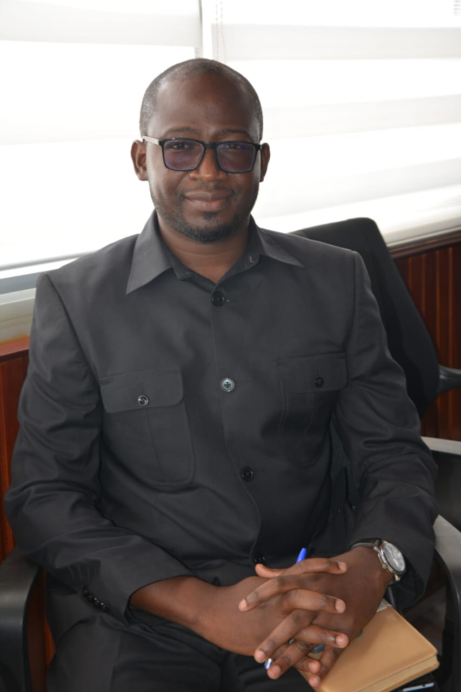

Ressources humaines
Le personnel du CNDT
Une équipe organisée par niveaux hiérarchiques, du Secrétariat Permanent aux Secrétariats techniques.
Annuaire interne
Effectif par niveau hiérarchique
Chaque ligne sépare un niveau hiérarchique. Cliquez sur une personne pour voir sa fiche.
Direction
1 personne
Secrétariat Permanent
1 personne
Coordinations exécutives adjointes
4 personnes
Dr TSUANYO David
Coordonnateur Exécutif Adjoint chargé de la Recherche
Doctorat en Ingénierie de l'Énergie

M. KOUNA Jean Baptiste
Coordonnateur Exécutif Adjoint — Commission Administrative, Financière et Comptable
Master Professionnel en Propriété Intellectuelle

Mme BILOUNGA BINDOUA Marie Sandrine
Coordonnatrice Exécutive Adjointe chargée de la Coopération
Master en Économie · DESS Banque-Finance · Master GRH

Mme ISAOURA Bénite
Coordonnatrice Exécutive Adjointe — Documentation, Communication et Relations Publiques
Master Professionnel en Informatique
Chefs de Secrétariat titulaires
5 personnes
Dr ABOUBAKAR EL BOUKAR
Chef du Secrétariat des Politiques Scientifiques et Technologiques
Doctorat en Droit Public

M. AMADA BRAHIM
Chef du Secrétariat des Ressources Humaines, de l'Action Sociale et du Multiculturalisme
Doctorant en Biologie

Dr MENGA Francis Daniel
Chef de Secrétariat Technologies de l'Energie des Mines et de l'Environnement
Doctorat en Énergétique et Environnement

Dr PAGLAN Paul André
Chef du Secrétariat Technologies et Transformations Industrielles
Doctorat en Physique Non Linéaire et Systèmes Complexes

Mme TEMGOUA NANFACK Pélagie Flore épse ABOMO
Chef du Secrétariat TIC et Intelligence Artificielle
Master de Recherche en Informatique
Autres Chefs de Secrétariat
3 personnes
Mme EYOUM EKOULE Henriette Annie Dorette
Assistante du Secrétaire Permanent
Baccalauréat D

M. BABGAI Raphaël GUIDÉKÉ
Chef de Secrétariat Adjoint — Responsable du Parc Informatique
Master en Informatique et Télécommunications

M. AVAH Jean Jaurès Fils
Chef de la cellule informatique
DEA en Biologie Animale, option Zoologie
Aucun résultat
Aucune personne ne correspond à votre recherche. Essayez un autre nom, une fonction ou un Secrétariat.
Personnels
40 personnes| N° | Nom et prénom(s) | Grade | Diplôme de recrutement / spécialité |
|---|---|---|---|
| 01 | Mme ATEM TAKANG-ETTA Linda-Rose | Attaché de Recherche | Diplôme d'Ingénieur en Génie des Procédés Chimiques |
| 02 | Mme BALKISSOU Hamidou | Attaché de Recherche | Diplôme d'Ingénieur en Science de l'Environnement — option Génie des Ressources en Eau et Assainissement des Villes Africaines |
| 03 | M. BANG NJENJOCK Blixen Bolie | Attaché de Recherche | Master II en Physique — option Atome et Radiation |
| 04 | M. BAYIHA JUNIOR Dorian | Attaché de Recherche | Diplôme d'Ingénieur de Conception en Géologie Minière |
| 05 | M. DONTSA JIMMY Orlus | Attaché de Recherche | Diplôme d'Ingénieur de Conception en Cryptographie |
| 06 | M. ELIGUENE FRANCK Gislain | Attaché de Recherche | Master en Géologie Appliquée |
| 07 | M. EPEE WILLIE Aurélein | Attaché de Recherche | Master en Génie des Procédés et Ingénierie |
| 08 | Mme FETMOUFA NJENJI Linda Ange | Attaché de Recherche | Doctorat Ph.D en Propriété Intellectuelle |
| 09 | M. FOTSO FOTSO Guy Phares | Attaché de Recherche | Doctorat en Mathématiques |
| 10 | M. GUIDANA Pierre | Attaché de Recherche | Diplôme d'Ingénieur des Procédés — option Chimie Industrielle et Génie de l'Environnement |
| 11 | Mme GUEA BISSAH Christelle | Attaché de Recherche | Master II en Droit Public |
| 12 | Mme HAPSATOU DANLADY | Attaché de Recherche | Diplôme d'Ingénieur de Conception en Génie Informatique et Télécommunications |
| 13 | M. INOUSS MAMATE Abakaka | Attaché de Recherche | Diplôme d'Ingénieur de Conception en Énergies Renouvelables |
| 14 | Mme KENMOGNE TCHATCHIM Liliane | Attaché de Recherche | Master Professionnel en Gouvernance Financière |
| 15 | M. KEUTCHANGA FONCHA Jules Marcel | Attaché de Recherche | Diplôme d'Ingénieur de Conception — option Génie Mécanique |
| 16 | M. KUATE FOTSO Jean-Marie | Attaché de Recherche | Master II en Système et Logiciel en Environnement Distribué |
| 17 | M. LIBII LI NTEP Joseph Junior | Attaché de Recherche | Master in Computer Science — option Science des Données |
| 18 | M. MABOU DEFO Rodrigue Sommet | Attaché de Recherche | Master en Modélisation Mathématique |
| 19 | M. MAFAI MAGUELVA Nelson | Attaché de Recherche | Master en Informatique |
| 20 | M. MBARGA Hervé Thaddée | Attaché de Recherche | Diplôme d'Ingénieur en Télécommunication et Technologie de l'Information et de la Communication |
| 21 | M. MENGUE François Dieudonné | Attaché de Recherche | Doctorat Ph.D en Physique — option Électronique et Instrumentation |
| 22 | Mme MILENE ONDOUA NDONGO | Attaché de Recherche | Master en Droit Privé |
| 23 | Mme NDA ONDOA Elise Natacha | Attaché de Recherche | Diplôme d'Ingénieur de Conception en Management des Risques Industriels et Environnementaux |
| 24 | M. NDJAKA Patrick Aimé | Attaché de Recherche | Diplôme d'Ingénieur en Télécommunication et Technologie de l'Information et de la Communication |
| 25 | M. NDZANGA ONDOA Luc Claver | Attaché de Recherche | Master en Mécatronique |
| 26 | M. NGIMBUS LAURENT Joël Junior | Attaché de Recherche | Master en Chimie Industrielle et Environnement |
| 27 | Mme NGO NGWEM Marcelline Carine | Attaché de Recherche | Diplôme d'Ingénieur de Chimie Industrielle et Génie de l'Environnement |
| 28 | Mme NGOS BIYIHA Erika Mado | Attaché de Recherche | Master en Physique |
| 29 | M. NNANGA NNANGA Jorel Brice | Attaché de Recherche | Doctorat en Médecine Générale |
| 30 | M. NOUBOUOWO CHOUAKE Arthur Stella | Attaché de Recherche | Diplôme d'Ingénieur de Conception en Agronomie et Sciences Agricoles |
| 31 | Mme NTEP Juliette Patricia Fanta | Attaché de Recherche | Diplôme d'Ingénieur en Télécommunication — option Sécurité des Réseaux et Systèmes d'Information |
| 32 | Mme OKALA BOUILLONG Noelly Manuela | Attaché de Recherche | Master en Biochimie — option Biotechnologie et Développement |
| 33 | Mme ONANA Ebodé | Attaché de Recherche | Diplôme de Master II en Histoire Économique et Sociale |
| 34 | M. OUMAROU DJOUBAIROU Oumarou | Attaché de Recherche | Diplôme d'Ingénieur en Maintenance Industrielle et Productique |
| 35 | M. OWONA Jorel Landry | Attaché de Recherche | Master II en Sciences de la Matière — Électronique, Électrotechnique, Automatique |
| 36 | M. SOULEYMANOU MANSOUROU | Attaché de Recherche | Master en Réseaux et Services Distribués |
| 37 | M. TCHATCHOUANG BRAVEL Benveniste | Attaché de Recherche | Master en Physique |
| 38 | Mme TOUEMBOU MAFFO Murielle | Attaché de Recherche | Master Professionnel en Biologie des Organismes Végétaux |
| 39 | M. TSILLA NDONGO Damien Serge | Attaché de Recherche | Diplôme d'Ingénieur en Télécommunication — option Sécurité des Réseaux et Systèmes d'Information |
| 40 | Mme YAOUDA M SOPHIE | Attaché de Recherche | Master en Droit Public |
Instituts sous tutelle du MINRESI